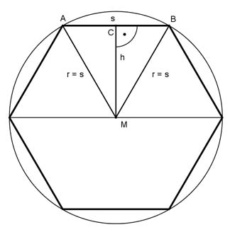

Pythagoras Aufgabe 75 Das regelmäßige Sechseck hat eine Fläche von 120 cm². Wie lang ist eine Seite s in cm?  Das Teildreieck AMB hat eine Fläche von 120 cm³ -------- = 20 cm³ 6 Satz von Pythagoras im Dreieck MBC: MB = s s CB = --- 2 MB² = MC² + CB² | -CB² MC² = h² = MB² - CB² s h² = s² - (---)² 2 s² h² = s² - ---- 4 3 h² = --- s² |√ 4 h = 0,867 * s s * h A = ------- 2 s * 0,867 * s 20 = --------------- 2 20 = 0,433 * s² | : 0,433 46,2 = s² |√ s = 6,8 cm